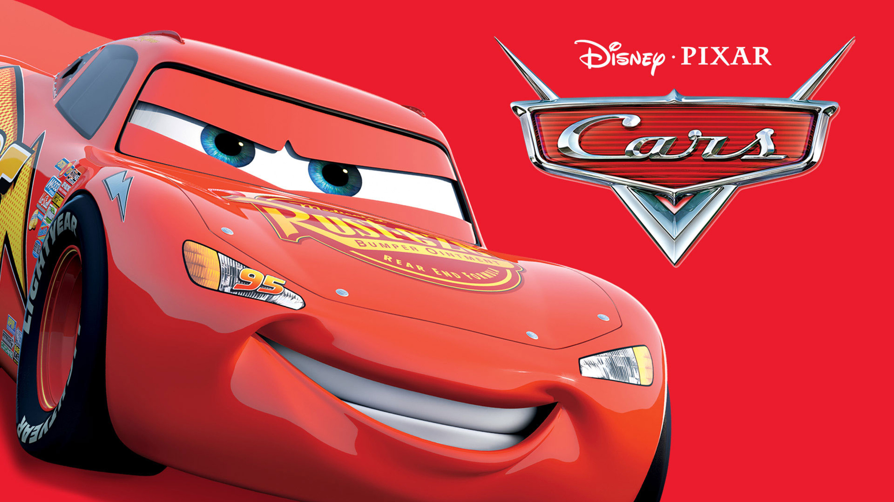

Pour réaliser ce portfolio, j'ai utilisé VSCode pour rédiger et organiser mon code HTML et CSS proprement. J'ai aussi eu besoin de Convertio pour convertir et adapter mes images au bon format (comme .png ou .webp) afin qu'elles s'affichent correctement et rapidement sur le site.
